1Harbin Institute of Technology
2Explore Academy of JD.com, Beijing
3Max Planck Institute for Intelligent Systems, Tubingen
IEEE/CVF Conf. on Computer Vision and Pattern Recognition (CVPR) 2022
Given an image with multiple people, our goal is to directly regress the pose and shape of all the people as well as their relative depth. Inferring the depth of a person in an image, however, is fundamentally ambiguous without knowing their height. This is particularly problematic when the scene contains people of very different sizes, e.g. from infants to adults. To solve this, we need several things. First, we develop a novel method to infer the poses and depth of multiple people in a single image. While previous work that estimates multiple people does so by reasoning in the image plane, our method, called BEV, adds an additional imaginary Bird's-Eye-View representation to explicitly reason about depth. BEV reasons simultaneously about body centers in the image and in depth and, by combing these, estimates 3D body position. Unlike prior work, BEV is a single-shot method that is end-to-end differentiable. Second, height varies with age, making it impossible to resolve depth without also estimating the age of people in the image. To do so, we exploit a 3D body model space that lets BEV infer shapes from infants to adults. Third, to train BEV, we need a new dataset. Specifically, we create a "Relative Human" (RH) dataset that includes age labels and relative depth relationships between the people in the images. Extensive experiments on RH and AGORA demonstrate the effectiveness of the model and training scheme. BEV outperforms existing methods on depth reasoning, child shape estimation, and robustness to occlusion. The code and dataset are released for research purposes.
Overview
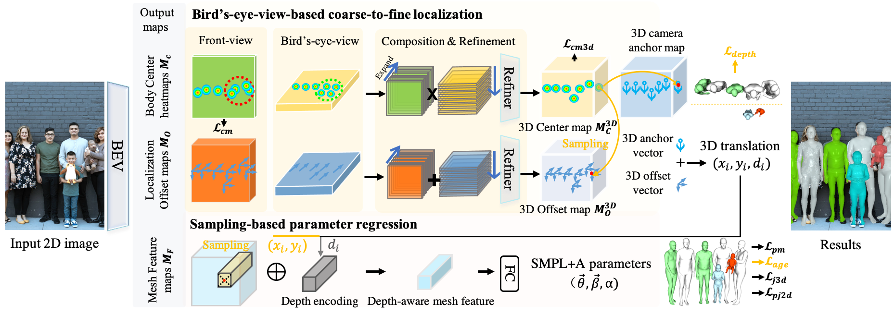
BEV adopts a multi-head architecture. Given a single RGB image as input, BEV outputs 5 maps. For coarse-to-fine localization, we use the first 4 maps, which are the Body Center heatmaps and the Localization Offset maps in the front view and bird's-eye view. We first expand the front-/bird's-eye-view maps in depth/height wise and then combine them to generate the 3D Center/Offset maps. For coarse detection, we extract the rough 3D position of people from the 3D Center map. For fine localization, we sample the offset vectors from the 3D Offset map at the corresponding 3D center position. Adding these gives the 3D translation prediction. For 3D mesh parameter regression, we use the estimated 3D translation (x, y, d) and the Mesh Feature map. The depth value d of 3D translation is mapped to a depth encoding. At (x, y), we sample a feature vector from the Mesh Feature map and add it with the depth encoding for final parameter regression. Finally, we convert the estimated parameters to body meshes using the SMPL+A model.
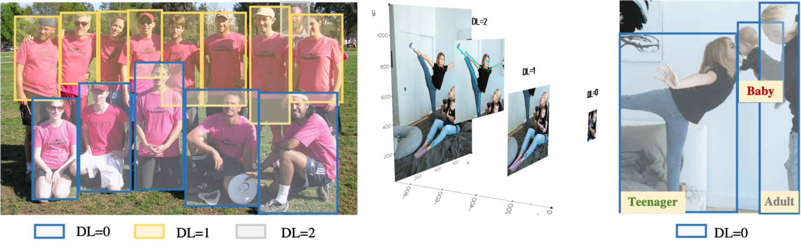
Existing in-the-wild datasets lack groups of overlapping people with annotations. Since acquiring 3D annotations of large crowds is challenging, we exploit more cost-effective weak annotations. We collect a new dataset, named Relative Human (RH), to support in-the-wild monocular human depth reasoning. As shown in the figure above, we annotate the relative depth relationship between all people in the image. We treat subjects whose depth difference is less than one body-width as people in the same layer. We then classify all people into different depth layers (DLs). Unlike prior work, which labels the ordinal relationships between pairs of joints of individuals, DLs capture the depth order of multiple people. Additionally, we label people with four age categories: adults, teenagers, children, and babies. In total, we collect about 7.6K images with weak annotations of over 24.8K people. More than 21% of the subjects are young people (5.3K), including teenagers, children, and babies. To learn from these weak annotations, we develop two relative loss functions, piece-wise depth layer loss and ambiguity-compatible age loss. For more details, please refer to our paper.
Demos
Qualitative Comparisons to previous SOTAs.
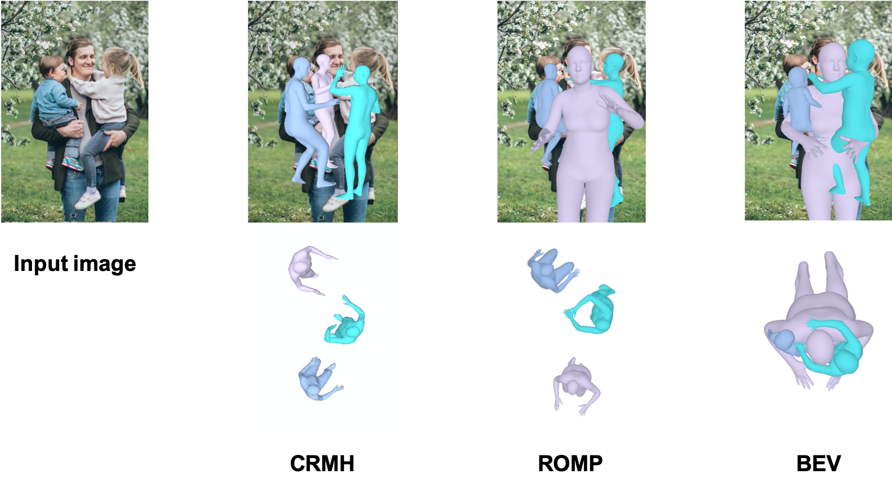 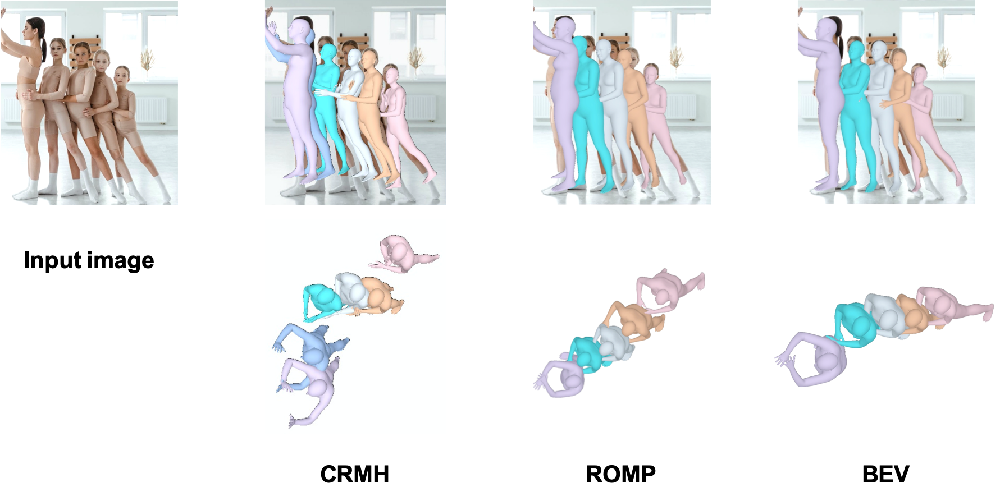
Qaulitative results on Internet images.
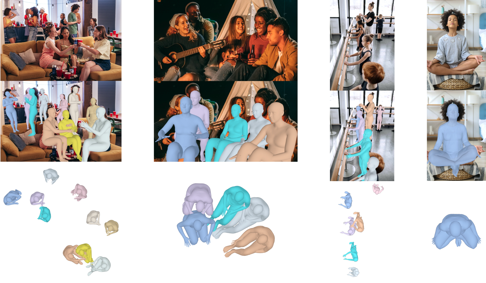 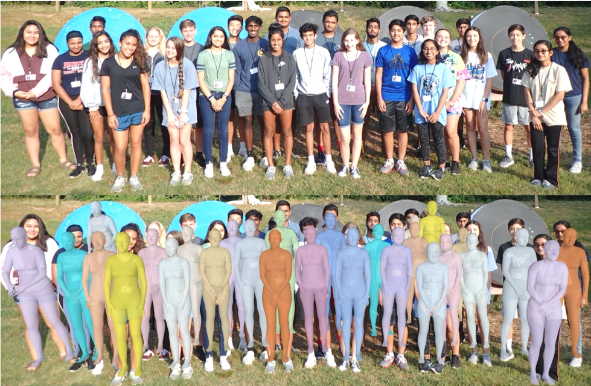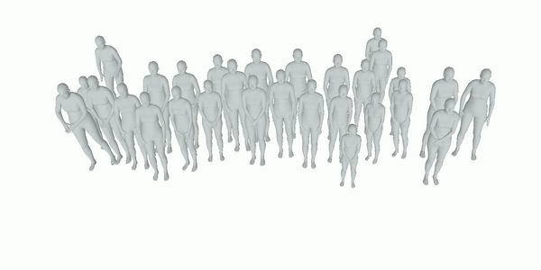 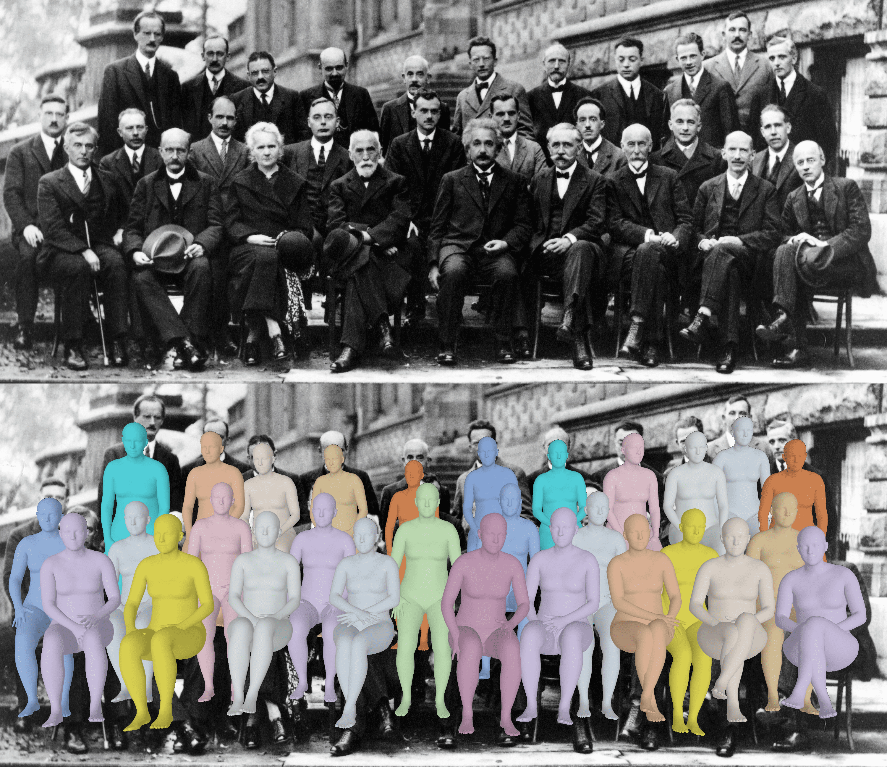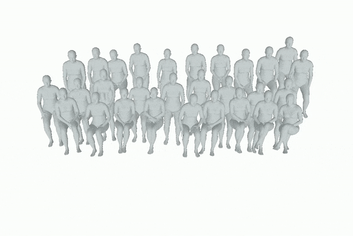 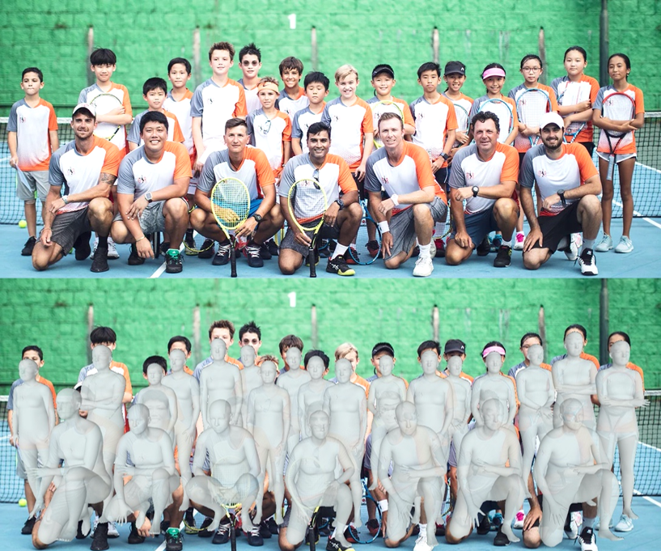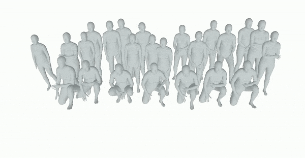Citation
@InProceedings{BEV,
author = {Sun, Yu and Liu, Wu and Bao, Qian and Fu, Yili and Mei, Tao and Black, Michael J.},
title = {Putting People in their Place: Monocular Regression of 3D People in Depth},
booktitle = {IEEE/CVF Conf. on Computer Vision and Pattern Recognition (CVPR)},
month = jun,
year = {2022}}
Acknowledgement
This work was supported by the National Key R&D Program of China under Grand No. 2020AAA0103800.Disclosure: MJB has received research funds from Adobe, Intel, Nvidia, Facebook, and Amazon and has financial interests in Amazon, Datagen Technologies, and Meshcapade GmbH. While he was part-time at Amazon during this project, his research was performed solely at Max Planck.
This project page is modified from this page.